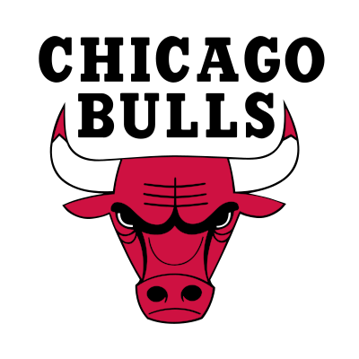

His best final NBA finish was #6 of 30, with the 2018-19 Houston Rockets. In his 170 games for 5 teams over 4 seasons they went 88–82 (51.8%), +6 games over .500, with an average final finish of 16.5.
Jump to: Record by opponent · Season by season · Teammate help
Compare Gary Clark with…
Final NBA finish, season by season
Title Finals Other playoffs Missed playoffs. #1 = champion; the dashed line is last place that season. Each point opens that season's final standings.
All 30 teams ranked in 2018-19, his best finish (#6)Teammate help
 James Harden5.01 season
James Harden5.01 season Nikola Vucevic1.01 season
Nikola Vucevic1.01 season Herb Jones0.11 season
Herb Jones0.11 season
Career
Career records (W–L, W − L, with and without) include 2026-27 games through Nov. 23, 2026; season counts and finishes are through 2025-26. Each card opens its board in the same scope. How we count.

Latest completed seasons
Season by season
Newest first; every header sorts. Final NBA finish is the team's rank among all teams that season (#1 = champion) and opens that season's standings. "Without him" uses the team-season window; the span line counts only the games between his first and last game for the team.
| 2021-22 | #16 of 30 | 36–46 43.9% | Lost 1st round 2–4 | 38 of 82 | 20–18 52.6% | 16–28 36.4%span: 9–8, gap −0.3 | +16.3 | |
| 2020-21 | #28 of 30 | 21–51 29.2% | Missed playoffs | 35 of 72 | 8–27 22.9% | 9–6 60.0%span: 4–2, gap −43.8 | −37.1 | |
| 2020-21 | #8 of 30 | 47–25 65.3% | Lost conf semis 0–4 | 2 of 72 | 2–0 100.0% | 18–7 72.0%span: N/A, gap N/A | +28.0 | |
| 2020-21 | #6 of 30 | 49–23 68.1% | Lost conf semis 3–4 | 2 of 72 | 2–0 100.0% | 12–7 63.2%span: N/A, gap N/A | +36.8 | |
| 2019-20 | #8 of 30 | 44–28 61.1% | Lost conf semis 1–4 | 18 of 72 | 12–6 66.7% | 14–7 66.7%span: 3–2, gap +6.7 | 0.0 | |
| 2019-20 | #16 of 30 | 33–40 45.2% | Lost 1st round 1–4 | 24 of 73 | 11–13 45.8% | 8–8 50.0%span: 3–6, gap +12.5 | −4.2 | |
| 2018-19 | #6 of 30 | 53–29 64.6% | Lost conf semis 2–4 | 51 of 82 | 33–18 64.7% | 20–11 64.5%span: 20–10, gap −2.0 | +0.2 |
On/off, starts and close games
From the lineup data, 1996-97 on. On/off is net points per 100 possessions with him on the floor minus off, a different unit from the win-rate gaps. Started and off the bench are team records in those games; close games are those within 5 points in the last 5 minutes with him on the floor.
| 2021-22 | −3.7 | 1–0 100.0% | 19–18 51.4% | 4–1 80.0% | |
| 2020-21 | +3.4 | 4–7 36.4% | 4–20 16.7% | 2–5 28.6% | |
| 2020-21 | −104.1 | N/A | 2–0 100.0% | N/A | |
| 2020-21 | −26.8 | N/A | 2–0 100.0% | N/A | |
| 2019-20 | −6.6 | N/A | 12–6 66.7% | 0–1 0.0% | |
| 2019-20 | −10.1 | 1–4 20.0% | 10–9 52.6% | 1–1 50.0% | |
| 2018-19 | −6.1 | 1–1 50.0% | 32–17 65.3% | 3–4 42.9% |
Teammate help by season
Help this season = Teammates Score points for honors won that season by teammates who shared a game with him, with every teammate that adds to it. Only honors won in that same season count. How help works.
- 2021-22
 New Orleans
Herb Jones All-Rookie 2nd0.12537 g
New Orleans
Herb Jones All-Rookie 2nd0.12537 g
Help this season: 0.125 = 0.125 Herb Jones
Other teammates (no honors that season): Jaxson Hayes 38 g, Devonte Graham 35 g, Jose Alvarado 34 g, Jonas Valanciunas 31 g, Garrett Temple 29 g, Naji Marshall 25 g, Brandon Ingram 25 g, Willy Hernangomez 23 g, Trey Murphy 22 g, Nickeil Alexander-Walker 18 g, CJ McCollum 16 g, Josh Hart 16 g, Tony Snell 12 g, Tomas Satoransky 6 g and 4 more
- 2020-21
 Orlando
Nikola Vucevic All-Star135 g
Orlando
Nikola Vucevic All-Star135 g
Help this season: 1 = 1 Nikola Vucevic
Other teammates (no honors that season): Dwayne Bacon 35 g, Khem Birch 34 g, Terrence Ross 30 g, James Ennis 23 g, Cole Anthony 22 g, Aaron Gordon 19 g, Chuma Okeke 19 g, Mo Bamba 19 g, Evan Fournier 17 g, Michael Carter-Williams 16 g, Jordan Bone 14 g, Al-Farouq Aminu 11 g, Chasson Randle 9 g, Karim Mane 7 g and 2 more
- 2020-21
 Denver
Denver
 Nikola Jokic MVPAll-NBA 1stAll-Star112 g
Nikola Jokic MVPAll-NBA 1stAll-Star112 g
Help this season: 11 = 11 Nikola Jokic
Other teammates (no honors that season): Aaron Gordon 2 g, JaMychal Green 2 g, Will Barton 2 g, Facundo Campazzo 2 g, Markus Howard 2 g, Zeke Nnaji 2 g, Michael Porter 2 g, Vlatko Cancar 2 g, Monte Morris 2 g, PJ Dozier 2 g, JaVale McGee 1 g, Paul Millsap 1 g, Bol Bol 1 g
- 2020-21
 Philadelphia
Philadelphia
 Joel Embiid All-NBA 2ndAll-StarAll-Def 2nd4.51 g
Joel Embiid All-NBA 2ndAll-StarAll-Def 2nd4.51 g Ben Simmons All-StarAll-Def 1st21 g
Ben Simmons All-StarAll-Def 1st21 g
Help this season: 6.5 = 4.5 Joel Embiid + 2 Ben Simmons
Other teammates (no honors that season): Mike Scott 2 g, George Hill 2 g, Anthony Tolliver 2 g, Isaiah Joe 2 g, Paul Reed 2 g, Tyrese Maxey 2 g, Shake Milton 2 g, Furkan Korkmaz 2 g, Dwight Howard 1 g, Seth Curry 1 g, Tobias Harris 1 g, Danny Green 1 g, Rayjon Tucker 1 g
- 2019-20
 Houston
James Harden All-NBA 1stAll-Star517 g
Houston
James Harden All-NBA 1stAll-Star517 g Russell Westbrook All-NBA 3rdAll-Star315 g
Russell Westbrook All-NBA 3rdAll-Star315 g
Help this season: 8 = 5 James Harden + 3 Russell Westbrook
Other teammates (no honors that season): Ben McLemore 18 g, PJ Tucker 18 g, Austin Rivers 16 g, Chris Clemons 14 g, Danuel House 14 g, Clint Capela 13 g, Thabo Sefolosha 10 g, Tyson Chandler 9 g, Isaiah Hartenstein 9 g, Eric Gordon 2 g
- 2019-20OrlandoHelp this season: 0, no honored teammate
- 2018-19Houston
James Harden All-NBA 1stAll-Star548 g
Help this season: 5 = 5 James Harden
Other teammates (no honors that season): PJ Tucker 51 g, Clint Capela 43 g, Gerald Green 43 g, Eric Gordon 41 g, Chris Paul 34 g, James Ennis 29 g, Isaiah Hartenstein 27 g, Austin Rivers 26 g, Danuel House 22 g, Nenê 18 g, Marquese Chriss 16 g, Michael Carter-Williams 15 g, Kenneth Faried 12 g, Iman Shumpert 10 g and 7 more
Record against each opponent
Regular season, through 2025-26 (2026-27 games not included): 170 games, 88–82, against 30 franchises.
Grouped by franchise (named as today); game lists keep each team's name that season. Filters and the tab are kept in the URL, so a filtered view can be shared.
| Games list | |||||||
|---|---|---|---|---|---|---|---|
| 9 | 5–4 | 55.6% | +1 | N/A | 2018-19 to 2021-22 | ||
| 8 | 3–5 | 37.5% | −2 | N/A | 2018-19 to 2021-22 | ||
| 8 | 6–2 | 75.0% | +4 | N/A | 2018-19 to 2021-22 | ||
| 7 | 2–5 | 28.6% | −3 | N/A | 2018-19 to 2021-22 | ||
| 7 | 5–2 | 71.4% | +3 | N/A | 2018-19 to 2021-22 | ||
| 7 | 1–6 | 14.3% | −5 | N/A | 2018-19 to 2021-22 | ||
| 7 | 4–3 | 57.1% | +1 | N/A | 2018-19 to 2021-22 | ||
| 7 | 5–2 | 71.4% | +3 | N/A | 2018-19 to 2021-22 | ||
| 7 | 3–4 | 42.9% | −1 | N/A | 2018-19 to 2021-22 | ||
| 6 | 1–5 | 16.7% | −4 | N/A | 2018-19 to 2021-22 | ||
| 6 | 3–3 | 50.0% | 0 | N/A | 2018-19 to 2021-22 | ||
| 6 | 2–4 | 33.3% | −2 | N/A | 2018-19 to 2021-22 | ||
| 6 | 4–2 | 66.7% | +2 | N/A | 2018-19 to 2021-22 | ||
| 6 | 2–4 | 33.3% | −2 | N/A | 2018-19 to 2021-22 | ||
| 6 | 2–4 | 33.3% | −2 | 1–0 (1–1 in games) | 2018-19 to 2021-22 | ||
| 5 | 4–1 | 80.0% | +3 | N/A | 2018-19 to 2021-22 | ||
| 5 | 4–1 | 80.0% | +3 | N/A | 2018-19 to 2020-21 | ||
| 5 | 4–1 | 80.0% | +3 | N/A | 2018-19 to 2021-22 | ||
| 5 | 0–5 | 0.0% | −5 | 0–1 (1–4 in games) | 2018-19 to 2021-22 | ||
| 5 | 5–0 | 100.0% | +5 | N/A | 2018-19 to 2021-22 | ||
| 5 | 4–1 | 80.0% | +3 | N/A | 2018-19 to 2021-22 | ||
| 5 | 1–4 | 20.0% | −3 | N/A | 2018-19 to 2021-22 | ||
| 5 | 3–2 | 60.0% | +1 | N/A | 2018-19 to 2021-22 | ||
| 5 | 2–3 | 40.0% | −1 | N/A | 2018-19 to 2021-22 | ||
 ChicagoMost-faced: Zach LaVine (4 games) · Head-to-Head | 4 | 3–1 | 75.0% | +2 | N/A | 2018-19 to 2020-21 | |
| 4 | 3–1 | 75.0% | +2 | N/A | 2019-20 to 2021-22 | ||
| 4 | 2–2 | 50.0% | 0 | N/A | 2018-19 to 2019-20 | ||
| 4 | 0–4 | 0.0% | −4 | N/A | 2018-19 to 2021-22 | ||
| 3 | 3–0 | 100.0% | +3 | N/A | 2018-19 to 2021-22 | ||
| 3 | 2–1 | 66.7% | +1 | N/A | 2018-19 to 2020-21 |
Rows add up to his career record in his games. A playoff series counts when he played in it; early round-robin games show as games only. How we count.
Playoffs, with and without him
Arrival and departure
Team wins per 82 games the season before he arrived vs his first season there, and his last season vs the season after he left. He leaves a team only when his next season with games is for another team (or he never plays again); whole seasons he missed and came back from are one "Missed" row with the team's record without him. Per 82 so short seasons compare fairly. These are team records, not a measure of what he did.
| Left | after 2021-22 | 2021-22: 36–46 36.0 per 82 | 2022-23: 42–40 42.0 per 82 without him | +6.0 wins | |
| Arrived | 2021-22 | 2020-21: 31–41 35.3 per 82 | 2021-22: 36–46 36.0 per 82 | +0.7 wins | |
| Left | after 2020-21 | 2020-21: 21–51 23.9 per 82 | 2021-22: 22–60 22.0 per 82 without him | −1.9 wins | |
| Left | after 2020-21 | 2020-21: 47–25 53.5 per 82 | 2021-22: 48–34 48.0 per 82 without him | −5.5 wins | |
| Left | after 2020-21 | 2020-21: 49–23 55.8 per 82 | 2021-22: 51–31 51.0 per 82 without him | −4.8 wins | |
| Arrived | 2020-21 | 2019-20: 46–27 51.7 per 82 | 2020-21: 47–25 53.5 per 82 | +1.9 wins | |
| Arrived | 2020-21 | 2019-20: 43–30 48.3 per 82 | 2020-21: 49–23 55.8 per 82 | +7.5 wins | |
| Left | after 2019-20 | 2019-20: 44–28 50.1 per 82 | 2020-21: 17–55 19.4 per 82 without him | −30.8 wins | |
| Arrived | 2019-20 | 2018-19: 42–40 42.0 per 82 | 2019-20: 33–40 37.1 per 82 | −4.9 wins | |
| Debut | 2018-19 | 2017-18: 65–17 65.0 per 82 | 2018-19: 53–29 53.0 per 82 | −12.0 wins |
Seasons split between teams
Each team's record before his first game for it, inside his window (games with and without him) and after his last game, in the seasons he played for two or more teams.
| 2020-21 | Dec. 27, 2020 to March 23, 2021 | N/A | 17–33 34.0% | 4–18 18.2% | 35 | |
| 2020-21 | April 6, 2021 to April 7, 2021 | 26–17 60.5% | 20–7 74.1% | 1–1 50.0% | 2 | |
| 2020-21 | May 14, 2021 to May 16, 2021 | 35–16 68.6% | 14–7 66.7% | N/A | 2 | |
| 2019-20 | Nov. 15, 2019 to Dec. 31, 2019 | N/A | 26–13 66.7% | 18–15 54.5% | 18 | |
| 2019-20 | Jan. 15, 2020 to Aug. 13, 2020 | 14–19 42.4% | 19–21 47.5% | N/A | 24 |
Best duos
Team record in regular-season games both played, top 10 by win %, at least 50 games together.
- James Harden
44–21 67.7%
 PJ Tucker
45–24 65.2%
PJ Tucker
45–24 65.2% Clint Capela
36–20 64.3%
Clint Capela
36–20 64.3% James Ennis
29–37 43.9%
James Ennis
29–37 43.9% Terrence Ross
18–34 34.6%
Terrence Ross
18–34 34.6%- Nikola Vucevic
19–40 32.2%
 Khem Birch
15–37 28.8%
Khem Birch
15–37 28.8%
With and without his teammates
His 12 teammates with the most regular-season games together. "Together" is the team's record in the games both played for it; "Without him" is the team's record in the games Gary Clark played for that team while the teammate was on it (between the teammate's first and last game for the team, the appearance span) and the teammate did not play. Fewer than 20 games without him: no gap. Games through Nov. 23, 2026. How we count.
- Together
- 45–24 65.2%
- Without him
- N/A N/A
- Gap
- Too few games without him
- James EnnisHouston 2018-19; Orlando 2019-20 to 2020-21
- Together
- 29–37 43.9%
- Without him
- 4–11 26.7%
- Gap
- Too few games without him
- James HardenHouston 2018-19 to 2019-20
- Together
- 44–21 67.7%
- Without him
- 1–3 25.0%
- Gap
- Too few games without him
- Nikola VucevicOrlando 2019-20 to 2020-21
- Together
- 19–40 32.2%
- Without him
- N/A N/A
- Gap
- Too few games without him
- Clint CapelaHouston 2018-19 to 2019-20
- Together
- 36–20 64.3%
- Without him
- 9–4 69.2%
- Gap
- Too few games without him
- Terrence RossOrlando 2019-20 to 2020-21
- Together
- 18–34 34.6%
- Without him
- 0–5 0.0%
- Gap
- Too few games without him
- Khem BirchOrlando 2019-20 to 2020-21
- Together
- 15–37 28.8%
- Without him
- 4–3 57.1%
- Gap
- Too few games without him
 Michael Carter-WilliamsHouston 2018-19; Orlando 2019-20 to 2020-21
Michael Carter-WilliamsHouston 2018-19; Orlando 2019-20 to 2020-21- Together
- 19–29 39.6%
- Without him
- 10–19 34.5%
- Gap
- 5.1 points lower
 Gerald GreenHouston 2018-19
Gerald GreenHouston 2018-19- Together
- 28–15 65.1%
- Without him
- 5–3 62.5%
- Gap
- Too few games without him
 Eric GordonHouston 2018-19 to 2019-20
Eric GordonHouston 2018-19 to 2019-20- Together
- 27–16 62.8%
- Without him
- 18–8 69.2%
- Gap
- 6.4 points higher
 Austin RiversHouston 2018-19 to 2019-20
Austin RiversHouston 2018-19 to 2019-20- Together
- 31–11 73.8%
- Without him
- 2–1 66.7%
- Gap
- Too few games without him
 Aaron GordonOrlando 2019-20 to 2020-21; Denver 2020-21
Aaron GordonOrlando 2019-20 to 2020-21; Denver 2020-21- Together
- 17–23 42.5%
- Without him
- 3–14 17.6%
- Gap
- Too few games without him